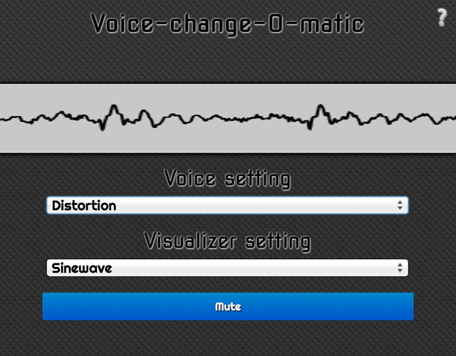
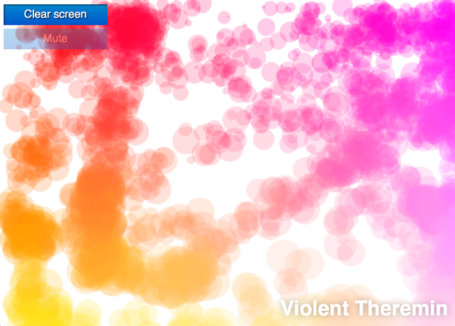

The Web Audio API provides a simple yet powerful mechanism to implement and manipulate audio content inside web applications. It allows you to perform complex audio mixing, utilize effects, panning, and more. This article explains the basics of using the Web Audio API, and provides some simple API use examples.
The Web Audio API does not replace the <audio> media element, but rather complements it, just like <canvas> coexists alongside the <img> element. Your use case will determine what tools you use to implement audio. If you simply want to control playback of an audio track, the <audio> media element provides a better, quicker solution than the Web Audio API. If you want to carry out more complex audio processing, as well as playback, the Web Audio API provides much more power and control.
A powerful feature of the Web Audio API is that it does not have a strict "sound call limitation". For example, there is no ceiling of 32 or 64 sound calls at one time. Some processors may be capable of playing more than 1,000 simultaneous sounds without stuttering.
Examples
The following example applications demonstrate how to use the Web Audio API. Many of the example applications undergo routine improvements and additions. Please feel free to add to the examples and suggest improvements!
Our first example application is a custom tool called the Voice-change-O-matic, a fun voice manipulator and sound visualization web app that allows you to choose different effects and visualizations. The application is fairly rudimentary, but it demonstrates the simultaneous use of multiple Web Audio API features. (run the Voice-change-O-matic live).

Another application developed specifically to demonstrate the Web Audio API is the Violent Theremin, a simple web application that allows you to change pitch and volume by moving your mouse pointer. It also provides a psychedelic lightshow (see Violent Theremin source code).

Basic concepts
Note: most of the code examples in this section are taken from the Violent Theremin application.
The Web Audio API handles audio operations inside an audio context, and has been designed to allow modular routing. Basic audio operations are performed with audio nodes, which are linked together to form an audio routing graph. Several audio sources with different channel layouts are supported, even within a single context. Because of this modular design, you can create complex audio functions with dynamic effects.
Audio nodes are linked together through their inputs and outputs. Linked nodes form a chain that begins with one or more audio sources, proceeds through one or more nodes, and arrives at a destination (although you don't have to provide a destination if you, say, just want to visualize some audio data). The following list provides a simple, typical workflow for using the Web Audio API.
- Create an audio context
- Inside the context, create audio sources, such as
<audio>, oscillator, stream - Create effects nodes, such as reverb, biquad filter, panner, compressor
- Choose a final destination for the audio, such as your system speakers
- Connect the sources to the effects, and connect the effects to the destination
Creating an audio context
Begin by creating an instance of AudioContext, upon which you can build an audio graph. The following is a simple example of creating an AudioContext instance.
var audioCtx = new AudioContext();
Note: Multiple audio context instances are allowed on the same document, but are likely wasteful.
It is, however, important to provide a prefixed AudioContext instance for Webkit/Blink browsers, and a non-prefixed instance for Firefox (desktop/mobile/OS). The following example demonstrates how to create prefixed and non-prefixed AudioContext instances.
var audioCtx = new (window.AudioContext || window.webkitAudioContext)();
Note: Safari can break if you don't explicitly mention the window object when creating a new context!
Creating an audio source
Now that you have created an audio context, you can use the context's methods to do most everything else. The first step in doing so is to create an audio source. You can create audio sources from a variety of places. The following list provides some examples of audio sources.
- Generated directly by JavaScript from an audio node such as an oscillator. An
OscillatorNodecan be created using theAudioContext.createOscillatormethod. - Created from raw PCM data. The audio context has methods to decode supported audio formats. For more information, refer to
AudioContext.createBuffer(),AudioContext.createBufferSource(), andAudioContext.decodeAudioData(). - Taken from HTML media elements such as
<video>, or<audio>. For more information, refer toAudioContext.createMediaElementSource(). - Taken directly from a WebRTC
MediaStreamsuch as from a webcam or microphone. For more information, refer toAudioContext.createMediaStreamSource().
The following example demonstrates how to create an oscilator audio source that will provide a simple tone. The example also creates a gainNode node to control sound volume.
var oscillator = audioCtx.createOscillator(); var gainNode = audioCtx.createGain();
Note: To play a music file directly, you generally have to load the file using XHR, decode the file into a buffer, and then feed that buffer into a buffer source. For more information, refer to the following example from Voice-change-O-matic.
Note: Scott Michaud has written a useful helper library, called AudioSampleLoader, for loading and decoding one or more audio samples, . This can help simplify the XHR/buffering process described in the preceding note.
Linking source and destination nodes together
To actually output the tone through your speakers, you need to link the source and destination nodes together. You can connect two nodes by calling the connect method on the node you want to connect from, and using the node that you want to connect to as the parameter for the connect method. The connect method is available for most node types.
The default output mechanism of your device (usually your system speakers) is accessed using AudioContext.destination. The following example demonstrates how to connect the oscillator, gain node, and destination together.
oscillator.connect(gainNode); gainNode.connect(audioCtx.destination);
The folowing example demonstrates how to chain multiple nodes together (such as in the Voice-change-O-matic). You can chain together as many nodes as you want.
source = audioCtx.createMediaStreamSource(stream); source.connect(analyser); analyser.connect(distortion); distortion.connect(biquadFilter); biquadFilter.connect(convolver); convolver.connect(gainNode); gainNode.connect(audioCtx.destination);
The following diagram illustrates an audio graph result of the preceding code example.
 You can also link multiple nodes to one node. For example, if you can mix multiple audio sources together, passing them all through a single effect node, such as a gain node.
You can also link multiple nodes to one node. For example, if you can mix multiple audio sources together, passing them all through a single effect node, such as a gain node.
Note: In Firefox 32, as well as all subsequent releases, the integrated Firefox Developer Tools include a Web Audio Editor, which is very useful for debugging web audio graphs.
Playing sound and setting a pitch
Now that you've learned how to set up an audio graph, you can adjust certain aspects of the sounds by setting property values and invoking methods on audio nodes. The following example sets a specific pitch (in hertz) and type for an oscillator node, then sets the oscillator to play the sound.
oscillator.type = 'sine'; // sine wave — other values are 'square', 'sawtooth', 'triangle' and 'custom' oscillator.frequency.value = 2500; // value in hertz oscillator.start();
The following example code, taken from the Violent Theremin example application, specifies a max gain and frequency value.
var WIDTH = window.innerWidth; var HEIGHT = window.innerHeight; var maxFreq = 6000; var maxVol = 1; var initialFreq = 3000; var initialVol = 0.5; // set options for the oscillator oscillator.type = 'sine'; // sine wave — other values are 'square', 'sawtooth', 'triangle' and 'custom' oscillator.frequency.value = initialFreq; // value in hertz oscillator.start(); gainNode.gain.value = initialVol;
You can also set new frequency and pitch values each time the mouse cursor is moved. The frequency and pitch values can be based on the current mouse X and Y coordinates, and set as a percentage of the maximum frequency and gain, as shown in the following example.
// Mouse pointer coordinates
var CurX;
var CurY;
// Get new mouse pointer coordinates when mouse is moved
// then set new gain and pitch values
document.onmousemove = updatePage;
function updatePage(e) {
CurX = (window.Event) ? e.pageX : event.clientX + (document.documentElement.scrollLeft ? document.documentElement.scrollLeft : document.body.scrollLeft);
CurY = (window.Event) ? e.pageY : event.clientY + (document.documentElement.scrollTop ? document.documentElement.scrollTop : document.body.scrollTop);
oscillator.frequency.value = (CurX/WIDTH) * maxFreq;
gainNode.gain.value = (CurY/HEIGHT) * maxVol;
canvasDraw();
}
A simple canvas visualization
A canvasDraw() function can also be invoked after each mouse movement. The canvasDraw() function draws a small cluster of circles on the current mouse pointer position. The size and colour of the circles are based on the frequency/gain values.
function random(number1,number2) {
var randomNo = number1 + (Math.floor(Math.random() * (number2 - number1)) + 1);
return randomNo;
}
var canvas = document.querySelector('.canvas');
canvas.width = WIDTH;
canvas.height = HEIGHT;
var canvasCtx = canvas.getContext('2d');
function canvasDraw() {
rX = CurX;
rY = CurY;
rC = Math.floor((gainNode.gain.value/maxVol)*30);
canvasCtx.globalAlpha = 0.2;
for(i=1;i<=15;i=i+2) {
canvasCtx.beginPath();
canvasCtx.fillStyle = 'rgb(' + 100+(i*10) + ',' + Math.floor((gainNode.gain.value/maxVol)*255) + ',' + Math.floor((oscillator.frequency.value/maxFreq)*255) + ')';
canvasCtx.arc(rX+random(0,50),rY+random(0,50),rC/2+i,(Math.PI/180)*0,(Math.PI/180)*360,false);
canvasCtx.fill();
canvasCtx.closePath();
}
}
Muting the theremin
When the Mute button is pressed, the function shown in the following example is invoked. The function disconnects the gain node from the destination node, creating a break in the audio graph. The resulting break stops sound from reaching the destination node, effectively muting the sound. Pressing the Mute button again reverses the effect.
var mute = document.querySelector('.mute');
mute.onclick = function() {
if(mute.id == "") {
gainNode.disconnect(audioCtx.destination);
mute.id = "activated";
mute.innerHTML = "Unmute";
} else {
gainNode.connect(audioCtx.destination);
mute.id = "";
mute.innerHTML = "Mute";
}
}
Other node options
You can create many other sounds using the Web Audio API, and in general, the process is much the same as the examples provided in this document. Simply put, the process involves creating a node, connecting it to the other nodes in a graph, and then manipulating any node's properties and methods to affect the sound source to your liking.
This document details a few of the basic tools and effects at your disposal when using the Web Audio API. Find more in-depth details of all tools and effects in the interface reference pages of the Web_Audio_API reference. The following sections provide introductory information on a couple of Web Audio API effects nodes.
Wave shaper nodes
The following example demostrates how to create a wave shaper node using the AudioContext.createWaveShaper method.
var distortion = audioCtx.createWaveShaper();
The wave shaper object, distortion, that results from the preceding code example must be fed a mathematically-defined wave shape that is applied to the base sound wave to create a distortion effect. Creating your own wave shape algorithm can be challenging, and we suggest searching the Web for an existing algorithm. The following wave shape algorithm example was found on Stack Overflow.
function makeDistortionCurve(amount) {
var k = typeof amount === 'number' ? amount : 50,
n_samples = 44100,
curve = new Float32Array(n_samples),
deg = Math.PI / 180,
i = 0,
x;
for ( ; i < n_samples; ++i ) {
x = i * 2 / n_samples - 1;
curve[i] = ( 3 + k ) * x * 20 * deg / ( Math.PI + k * Math.abs(x) );
}
return curve;
};
The following code example, from the Voice-change-O-matic application, connects a distortion node up to an audio graph, then applies the preceding wave shape algorithm to the distortion node.
source.connect(analyser); analyser.connect(distortion); distortion.connect(biquadFilter); ... distortion.curve = makeDistortionCurve(400);
Biquad filter
biquadFilter nodes have a number of existing options available. The following example demonstrates how to create biquadFilter nodes by using the AudioContext.createBiquadFilter method.
var biquadFilter = audioCtx.createBiquadFilter();
The particular biquadFilter option used in the Voice-change-O-matic demo is a lowshelf filter, which essentially provides a bass boost to the sound. The following example provides a demonstration of creating a lowshelf filter, by specifying the type of filter, frequency value, and gain value. In the case of a lowshelf filter, all frequencies below the specified frequency have their gain increased by 25 decibels.
biquadFilter.type = "lowshelf"; biquadFilter.frequency.value = 1000; biquadFilter.gain.value = 25;
Other things inside Web Audio API
The Web Audio API is capable of many things other than audio visualization and spatialization (e.g., panning sound). More advanced options will be documented in separate articles.